← 返回阅读库 · 原论文目录
论文讲解阅读文档 · 论文精读 · v252
比肩Claude！国产第一回归！GLM-5.2
视频时长 00:07:37；讲解文字 2,880 字符；提取讲解画面 119 张。按视频原顺序阅读，每段文字保留时间戳。
文字来自整段视频的自动语音转写，按自然停顿分段，并与 PPT / 论文页面 / 演示画面对齐。未将讲解压缩为摘要；术语、数字和口述公式请结合画面及原论文核对。 阅读稿已校正规范部分明确术语误识别；原始逐字稿和每处修改记录另行保留。
讲解画面为源视频截图（640×360），不是可编辑 PPT 文件。全片按每秒 2 帧扫描内容变化，逐步展开页保留；连续动画保留代表画面。清晰度受源视频限制。
下载完整资料包 · 含离线 HTML、PDF、Word、全部 PPT 画面和字幕。
原论文与材料
GLM-5.2: Built for Long-Horizon Tasks · 下载完整 PDF（13 页）
官方网页全文，以下 PDF 为网页导出，并非官方论文 PDF。
按时间阅读
00:00:00–00:00:04 · 画面 001
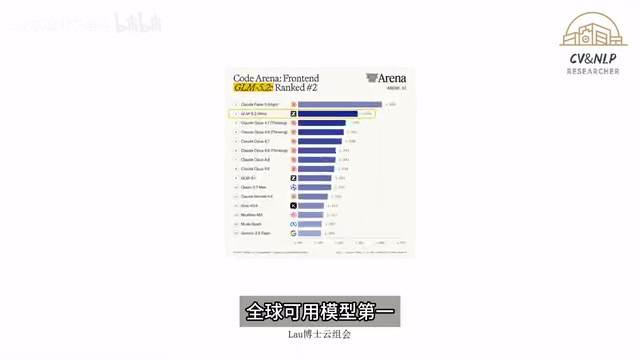
00:00:00–00:00:04 · 画面 001全球可用模型第一，国产最强 Coding 模型，智谱宣布 GLM5.2 正式开源。而就在前几天，由于众所周知的原因，Anthropic 关闭了所有外国公民对 Croft Faber-5 和 MIFOR-5 的访问权限。注意，不只是境外用户，就连美国境内的外籍员工都算。Faber-5 很强，但不能用，就相当于没用啊。GLM5.2 不仅开放，还开源，第一当之无愧。那本期视频，Ryo 博士结合官方刚刚发布的技术报告，和大家一起拆解
00:00:04–00:00:08 · 画面 002
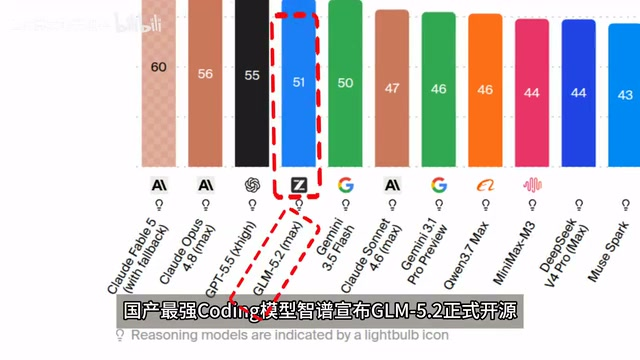
00:00:04–00:00:08 · 画面 00200:00:08–00:00:10 · 画面 003
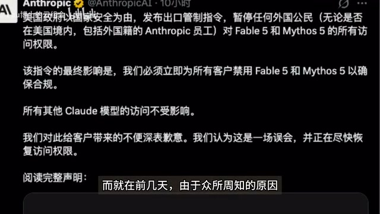
00:00:08–00:00:10 · 画面 00300:00:10–00:00:15 · 画面 004
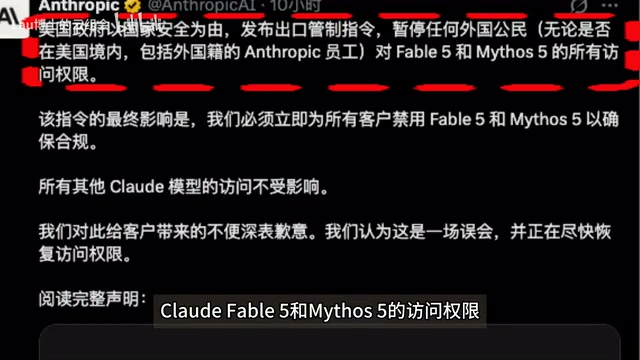
00:00:10–00:00:15 · 画面 00400:00:15–00:00:16 · 画面 005
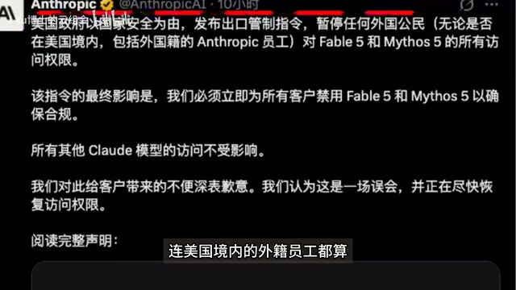
00:00:15–00:00:16 · 画面 00500:00:16–00:00:18 · 画面 006
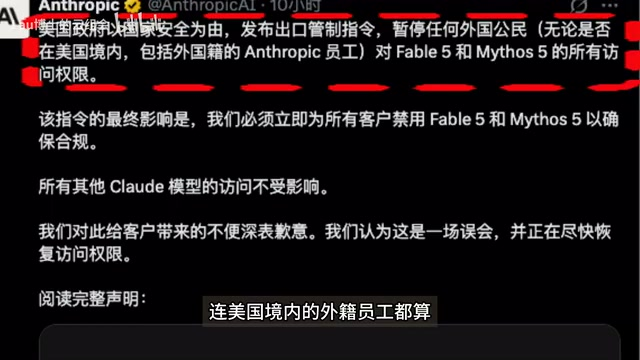
00:00:16–00:00:18 · 画面 00600:00:18–00:00:22 · 画面 007
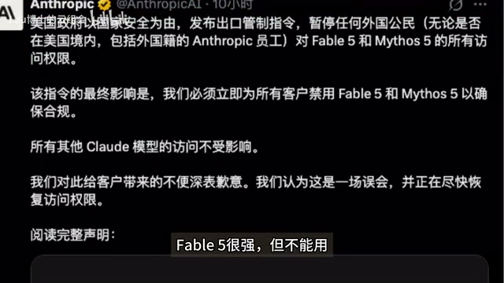
00:00:18–00:00:22 · 画面 00700:00:22–00:00:23 · 画面 008
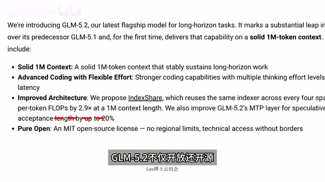
00:00:22–00:00:23 · 画面 00800:00:23–00:00:27 · 画面 009
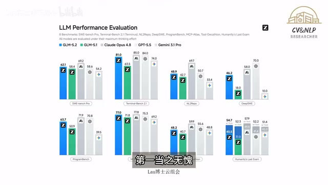
00:00:23–00:00:27 · 画面 00900:00:27–00:00:31 · 画面 010
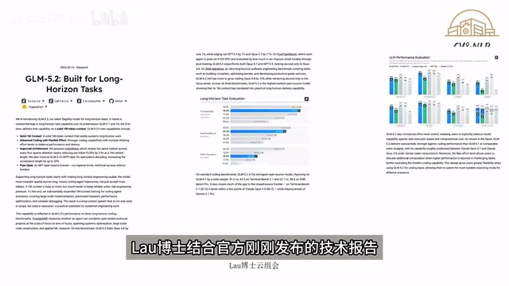
00:00:27–00:00:31 · 画面 010GLM5.2 的强大本质云组绘论文精读系列开源模型之王 GLM5.2 在技术解读前我们快速看一下测评结果
00:00:31–00:00:33 · 画面 011
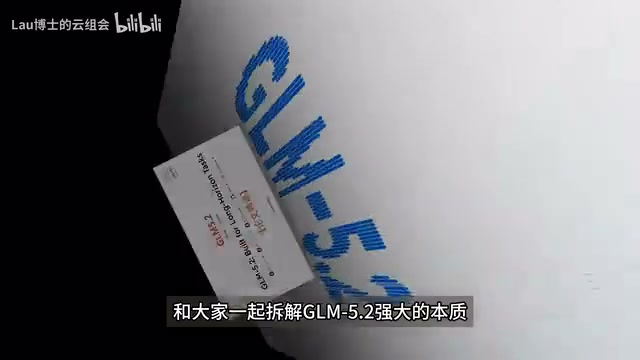
00:00:31–00:00:33 · 画面 01100:00:33–00:00:37 · 画面 012
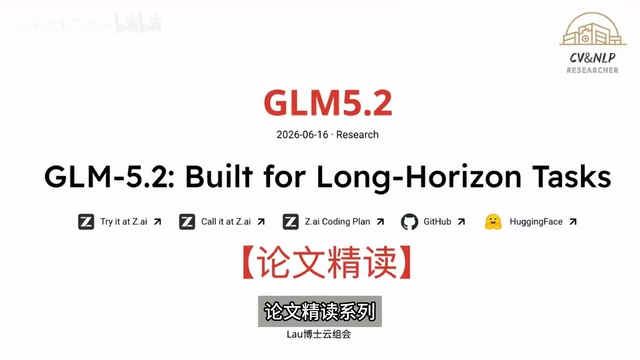
00:00:33–00:00:37 · 画面 01200:00:37–00:00:38 · 画面 013
00:00:37–00:00:38 · 画面 01300:00:38–00:00:40 · 画面 014
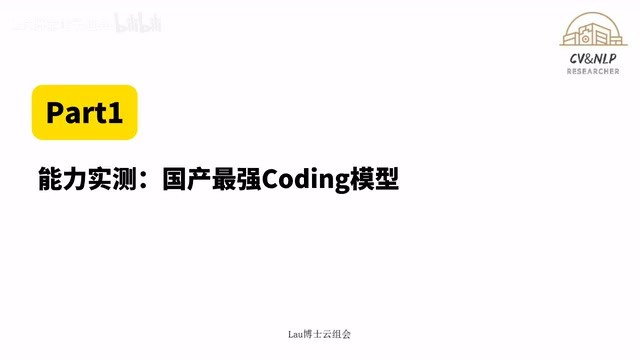
00:00:38–00:00:40 · 画面 01400:00:40–00:00:44 · 画面 015
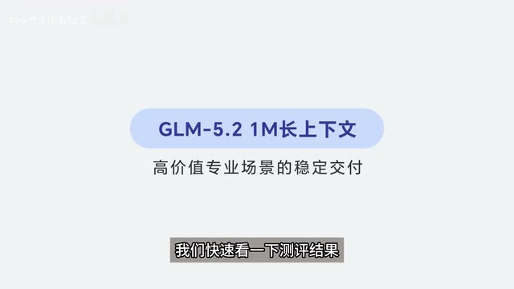
00:00:40–00:00:44 · 画面 015什么叫真正的 EM 上下文？第一个测试叫 Frontier SWE，测的是 Agent 能不能完成开放式的大型技术项目，覆盖系统优化，大规模的代码搭建，应用机器学习研究。最长给 20 个小时的执行时间，非常接近真实开发者的工作模式。结果 GLM5.2 拿到了 74.4 分，比 GPT5.5 高出了 1.8 分，仅次于 Claude Opus4.8，差距不到 5 分之一。然后是 PostTrainBench，给 Agent 一张 H100 的显卡
00:00:44–00:00:48 · 画面 016
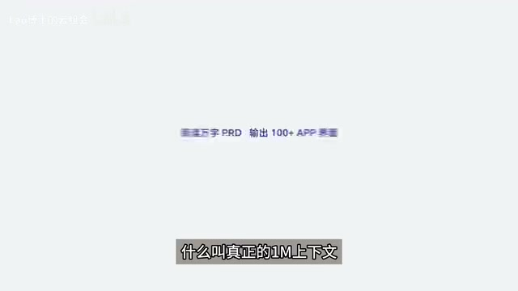
00:00:44–00:00:48 · 画面 01600:00:48–00:00:52 · 画面 017
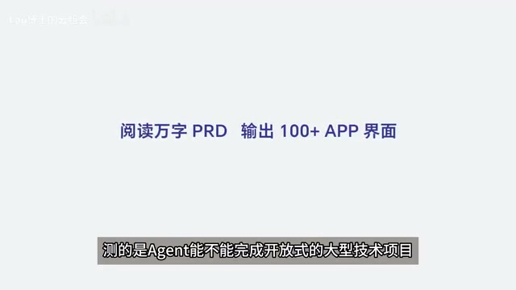
00:00:48–00:00:52 · 画面 01700:00:52–00:00:56 · 画面 018
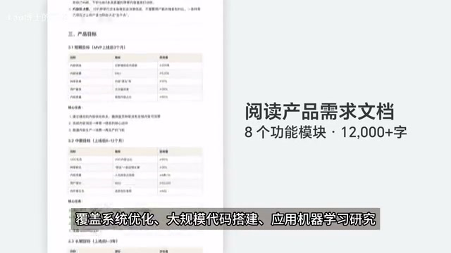
00:00:52–00:00:56 · 画面 01800:00:56–00:01:00 · 画面 019
00:00:56–00:01:00 · 画面 01900:01:00–00:01:04 · 画面 020
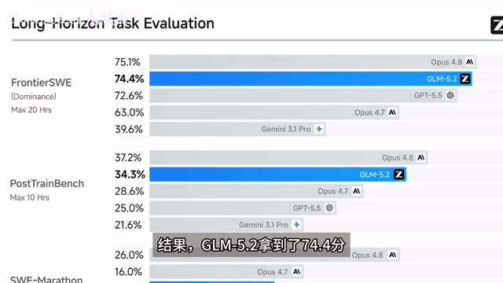
00:01:00–00:01:04 · 画面 02000:01:04–00:01:06 · 画面 021
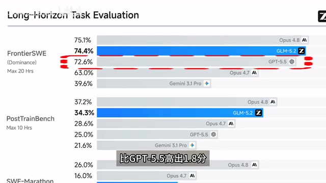
00:01:04–00:01:06 · 画面 02100:01:06–00:01:10 · 画面 022
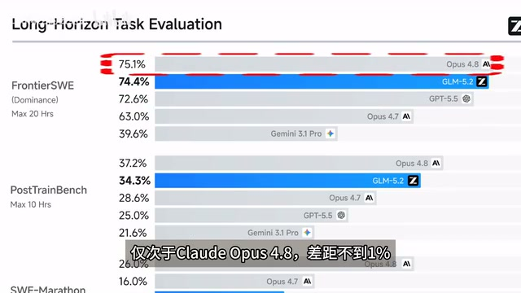
00:01:06–00:01:10 · 画面 02200:01:10–00:01:14 · 画面 023
00:01:10–00:01:14 · 画面 023看它能不能通过后训练把一个小模型的效果优化的最好相当于测 AI 做 AI 研究的能力 GLM5.2 排名第二远超 GPT5.5 和 Opus4.7 依然仅次于 Opus4.8
00:01:14–00:01:18 · 画面 024
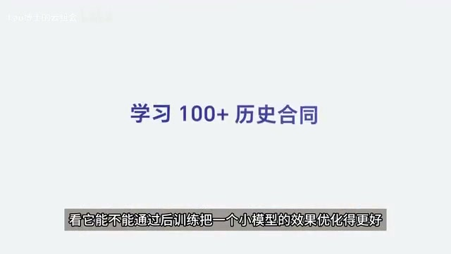
00:01:14–00:01:18 · 画面 02400:01:18–00:01:20 · 画面 025
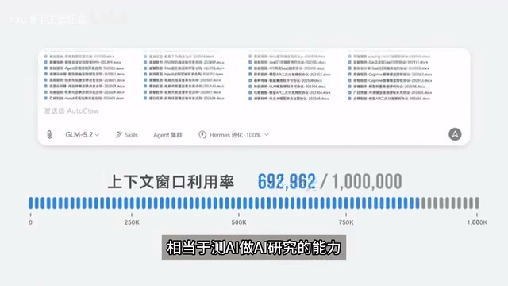
00:01:18–00:01:20 · 画面 02500:01:20–00:01:22 · 画面 026
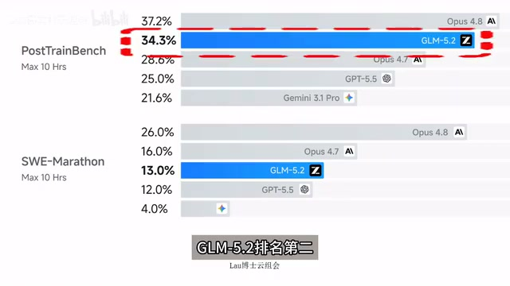
00:01:20–00:01:22 · 画面 02600:01:22–00:01:24 · 画面 027
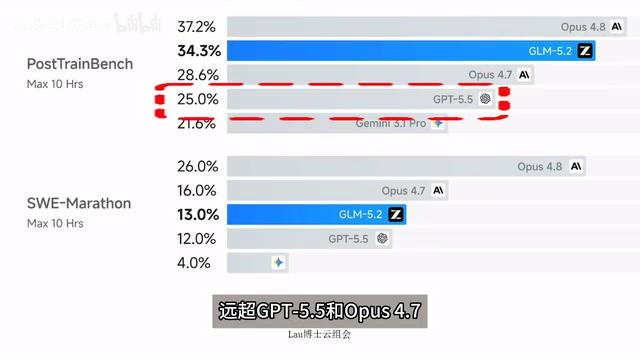
00:01:22–00:01:24 · 画面 02700:01:24–00:01:26 · 画面 028
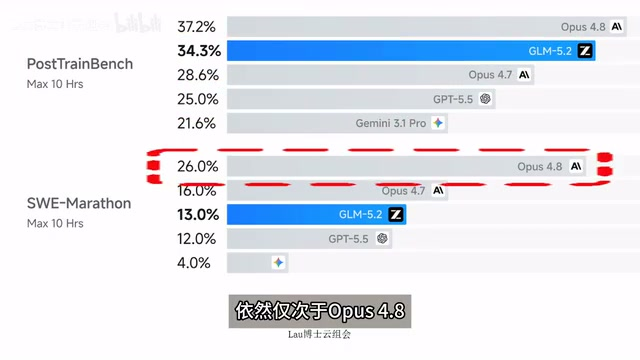
00:01:24–00:01:26 · 画面 028除了长程任务标准的编码能力也迎来了全面暴涨比如业内公认的硬核的 TerminalBench 2.1GLM 5.2 拿到了 81.0 分上一代的 GLM 5.1 只有 63.5 分单版本提升 17.5 分距离 Opus 4.8 的 85.0 分只差 4 分
00:01:26–00:01:30 · 画面 029
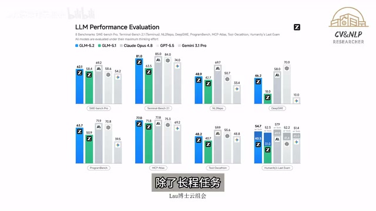
00:01:26–00:01:30 · 画面 02900:01:30–00:01:33 · 画面 030
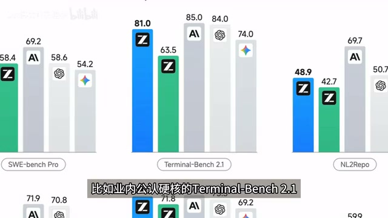
00:01:30–00:01:33 · 画面 03000:01:33–00:01:35 · 画面 031
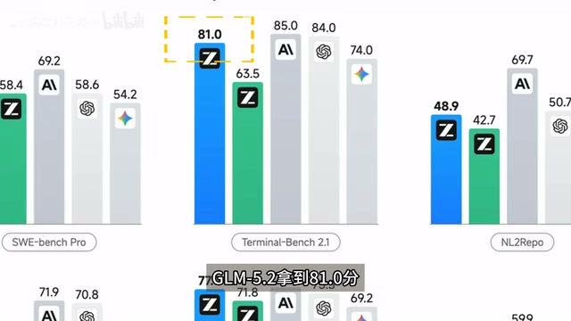
00:01:33–00:01:35 · 画面 03100:01:35–00:01:45 · 画面 032
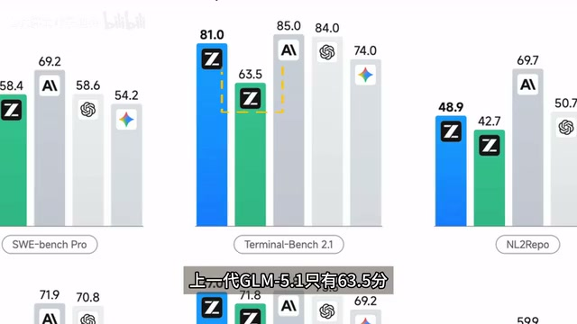
00:01:35–00:01:45 · 画面 032同时超过了 Gemini 3.1 Pro 另一项 SWE Bench Pro 也从 58.4 分涨到了 62.1 分同样稳居开源模型榜首另外本次的 GLM5.2 的升级引诱了 Effort Level 控制能在能力速度之间做出平衡从图里能看出来在同样的 Token 消耗下 GLM5.2 的能力已经介于 Opus 4.7 和 Opus 4.8 之间性价比非常突出来正式进入我们最爱的技术拆解环节
00:01:45–00:01:52 · 画面 033
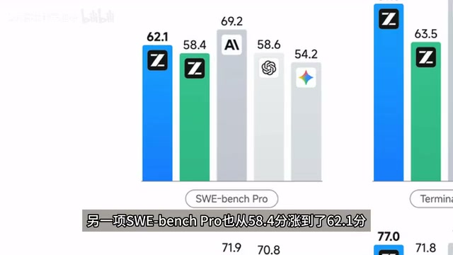
00:01:45–00:01:52 · 画面 03300:01:52–00:01:56 · 画面 034
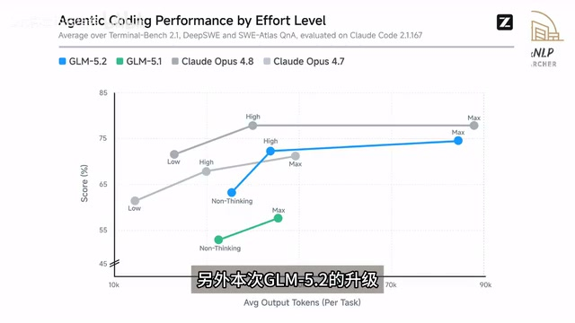
00:01:52–00:01:56 · 画面 03400:01:56–00:01:59 · 画面 035
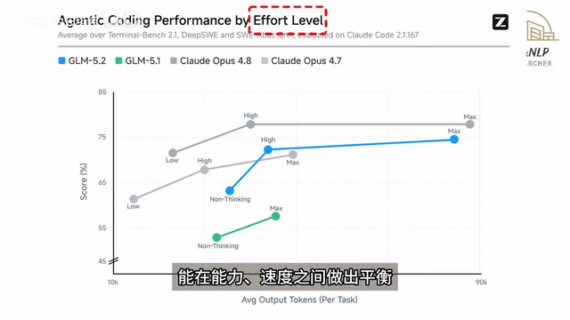
00:01:56–00:01:59 · 画面 03500:01:59–00:02:02 · 画面 036
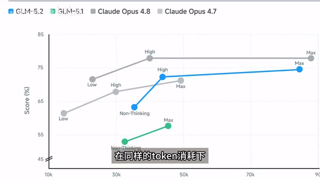
00:01:59–00:02:02 · 画面 03600:02:02–00:02:07 · 画面 037
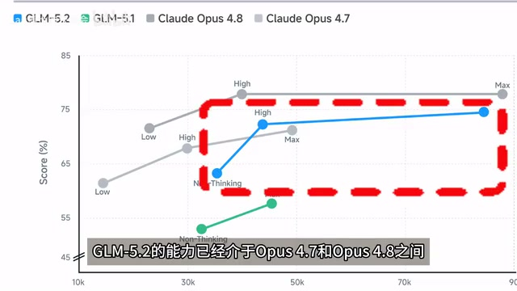
00:02:02–00:02:07 · 画面 03700:02:07–00:02:08 · 画面 038
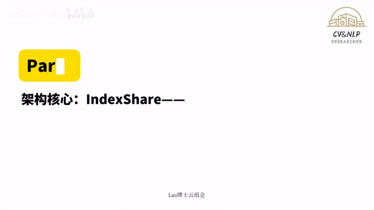
00:02:07–00:02:08 · 画面 03800:02:08–00:02:09 · 画面 039
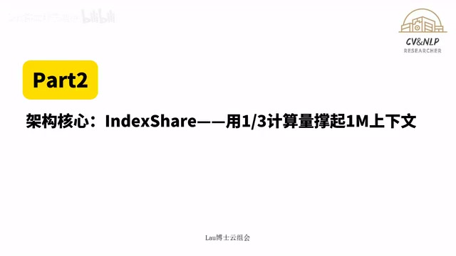
00:02:08–00:02:09 · 画面 03900:02:09–00:02:16 · 画面 040
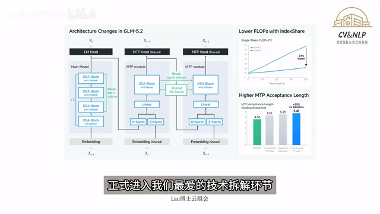
00:02:09–00:02:16 · 画面 040GLM5.2 能做到稳定的 EM 上下文最核心的技术就是这次提出的 Index Share 要讲明白它的厉害我们得先简单的科普一下稀疏注意力
00:02:16–00:02:18 · 画面 041
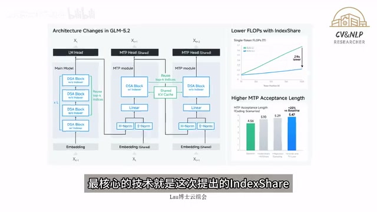
00:02:16–00:02:18 · 画面 04100:02:18–00:02:23 · 画面 042
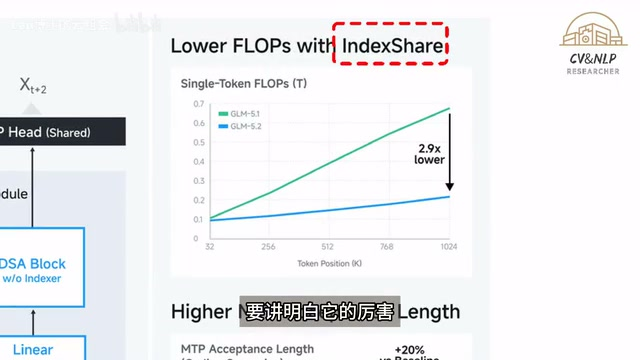
00:02:18–00:02:23 · 画面 04200:02:23–00:02:24 · 画面 043
00:02:23–00:02:24 · 画面 04300:02:24–00:02:25 · 画面 044
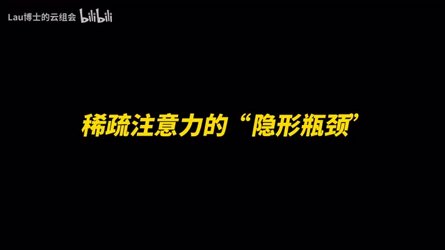
00:02:24–00:02:25 · 画面 044我们都知道普通的全注意力的计算量是随上下文的长度平方增长的，上下文翻一倍，计算量翻四倍，所以长上下文特别慢。稀疏注意力的思路很巧妙，模型不用关注所有的 Token，只需要挑出最相关的 Top K 个 Token 来计算注意力，这样核心计算量就从 OL 的平方降到了 OLK，速度快很多。但这里有个容易被忽略的瓶颈，挑 Top K 的索引器本身还是要遍历所有的 Token。
00:02:25–00:02:29 · 画面 045
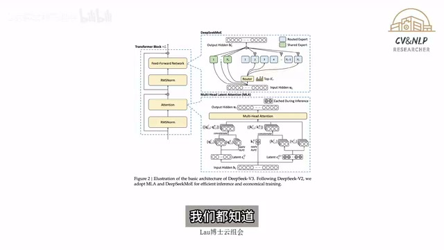
00:02:25–00:02:29 · 画面 04500:02:29–00:02:33 · 画面 046
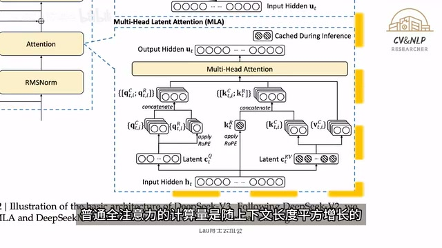
00:02:29–00:02:33 · 画面 04600:02:33–00:02:35 · 画面 047
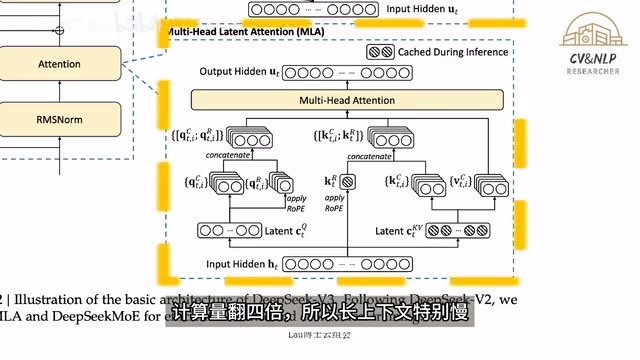
00:02:33–00:02:35 · 画面 04700:02:35–00:02:37 · 画面 048
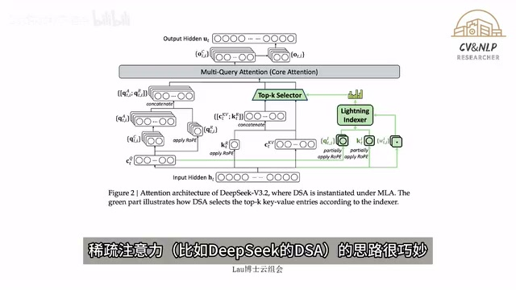
00:02:35–00:02:37 · 画面 04800:02:37–00:02:41 · 画面 049
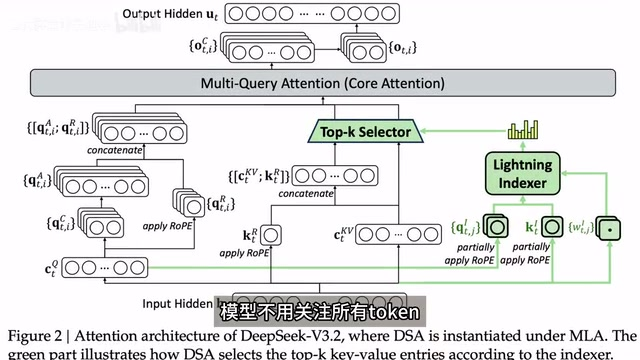
00:02:37–00:02:41 · 画面 04900:02:41–00:02:47 · 画面 050
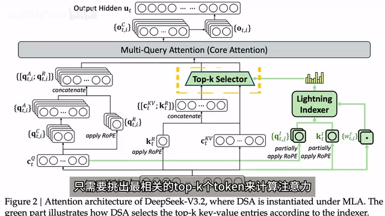
00:02:41–00:02:47 · 画面 05000:02:47–00:03:04 · 画面 051
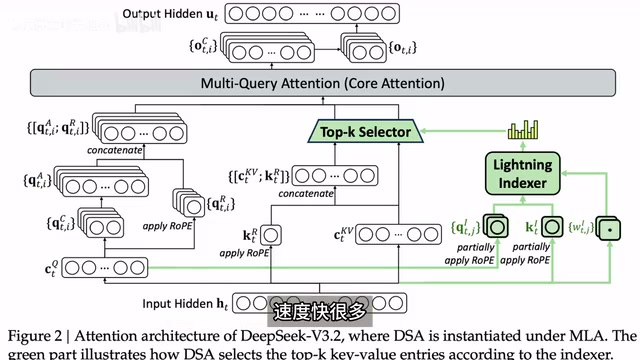
00:02:47–00:03:04 · 画面 051原来的设计是每层的 Transformer 都要单独跑一遍索引器，上下文短的时候还好，到了 EM Token 的规模，索引器本身的开销就成了新的瓶颈。Index Share 这个盲生抓住了滑点，既然相邻层挑出来的重点 Token 高度相似，那干嘛每层都要算一遍索引，不是浪费吗？因此他把每四个 Transformer 层分成了一组。
00:03:04–00:03:05 · 画面 052
00:03:04–00:03:05 · 画面 05200:03:05–00:03:06 · 画面 053
00:03:05–00:03:06 · 画面 05300:03:06–00:03:08 · 画面 054
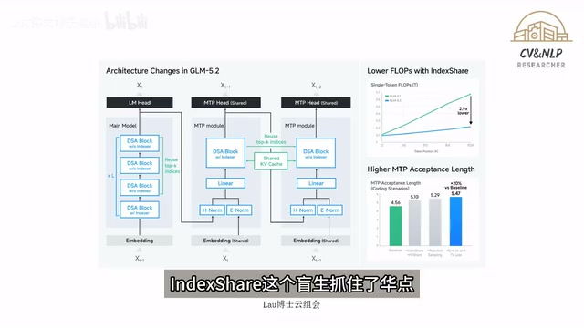
00:03:06–00:03:08 · 画面 05400:03:08–00:03:27 · 画面 055
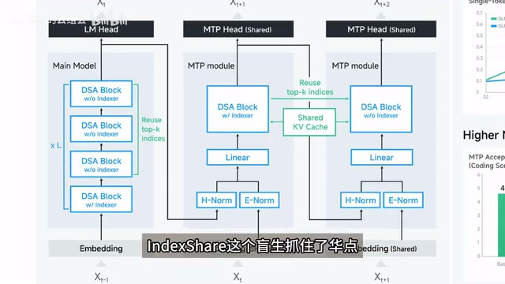
00:03:08–00:03:27 · 画面 055只在第一层跑完整的索引器算出 TopK 的位置后面三层直接复用第一层的索引结果不用再单独计算这样一来索引器的计算量直接砍掉了 75%在 EM 的上下文长度下每个 Token 的计算量直接降到了 GLM5.1 的 2.9 分之 1 效率非常夸张
00:03:27–00:03:28 · 画面 056
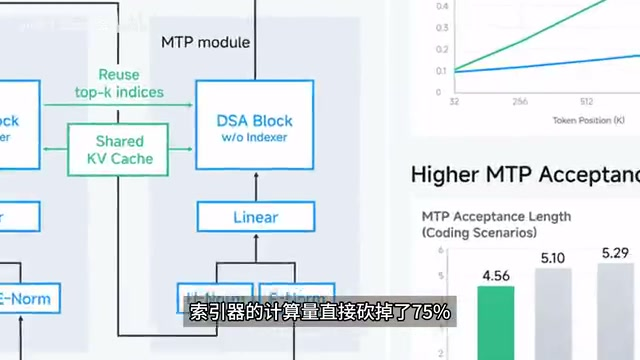
00:03:27–00:03:28 · 画面 05600:03:28–00:03:34 · 画面 057
00:03:28–00:03:34 · 画面 05700:03:34–00:03:36 · 画面 058
00:03:34–00:03:36 · 画面 05800:03:36–00:03:37 · 画面 059
00:03:36–00:03:37 · 画面 05900:03:37–00:03:39 · 画面 060
00:03:37–00:03:39 · 画面 06000:03:39–00:03:40 · 画面 061
00:03:39–00:03:40 · 画面 061大家可以把投机解码理解成了 GLM 内置的草稿模型先提前预测后面的 Token 再让主模型一次性校验不用一个字一个字蹦从而提升生成速度这就是投机解码
00:03:40–00:04:17 · 画面 062
00:03:40–00:04:17 · 画面 062原来的 MTP 有个问题，多步预测的时候，后面步骤的输入是自己生成的，和训练时的输入不一样，导致预测的准确率不高，主模型经常把回重写。用上 Index Share 之后，MTP 每一步都附用第一步的索引和 KV 缓存，所有的注意力都只看主模型生成的隐藏状态，反而消除了训练和推理的不一致，再加上拒绝采样端到端 TV 损失的优化，最终 MTP 的接受长度提升了 20%
00:04:17–00:04:19 · 画面 063
00:04:17–00:04:19 · 画面 06300:04:19–00:04:21 · 画面 064
00:04:19–00:04:21 · 画面 064从消融实验看出来基线版本的接受长度只有 4.56 再加上 Index Share 加 KV 共享直接涨到了 5.10 再叠加拒绝采样和 TV 损失的话直接飙到了 5.47 正好提升 20%同学们觉得这波 Index Share 的优化可以打几分呢?
00:04:21–00:04:24 · 画面 065
00:04:21–00:04:24 · 画面 06500:04:24–00:04:26 · 画面 066
00:04:24–00:04:26 · 画面 06600:04:26–00:04:28 · 画面 067
00:04:26–00:04:28 · 画面 06700:04:28–00:04:30 · 画面 068
00:04:28–00:04:30 · 画面 06800:04:30–00:04:33 · 画面 069
00:04:30–00:04:33 · 画面 06900:04:33–00:04:34 · 画面 070
00:04:33–00:04:34 · 画面 07000:04:34–00:04:35 · 画面 071
00:04:34–00:04:35 · 画面 07100:04:35–00:04:37 · 画面 072
00:04:35–00:04:37 · 画面 07200:04:37–00:04:38 · 画面 073
00:04:37–00:04:38 · 画面 07300:04:38–00:04:39 · 画面 074
00:04:38–00:04:39 · 画面 07400:04:39–00:04:40 · 画面 075
00:04:39–00:04:40 · 画面 07500:04:40–00:04:45 · 画面 076
00:04:40–00:04:45 · 画面 076刚刚闸门把模型的架构搞定了，现在的矛盾来到了硬件上。上下文从 200K 涨到了 1M，推理的瓶颈已经不是计算不够快，而是记忆存不下，调度跟不上，也就是 KV 缓存的容量。长上下文内核的开销，CPU 侧调度的三大瓶颈还是老样子。先看最终效果，和 GLM 5.1 相比，GLM 5.2 的吞吐优势随着上下文变长越来越大
00:04:45–00:04:46 · 画面 077
00:04:45–00:04:46 · 画面 07700:04:46–00:05:00 · 画面 078
00:04:46–00:05:00 · 画面 07800:05:00–00:05:02 · 画面 079
00:05:00–00:05:02 · 画面 07900:05:02–00:05:06 · 画面 080
00:05:02–00:05:06 · 画面 08000:05:06–00:05:08 · 画面 081
00:05:06–00:05:08 · 画面 081到 1M 的时候 GLM5.1 已经根本跑不动了 GLM5.2 还能稳定运行这背后主要是两项经验的工程优化我们一个个说
00:05:08–00:05:12 · 画面 082
00:05:08–00:05:12 · 画面 08200:05:12–00:05:14 · 画面 083
00:05:12–00:05:14 · 画面 08300:05:14–00:05:17 · 画面 084
00:05:14–00:05:17 · 画面 08400:05:17–00:05:18 · 画面 085
00:05:17–00:05:18 · 画面 085地下优化叫 Layer Split，专门解决长上下文 prefill 阶段的显存瓶颈。什么意思呢？原来做上下文并行的时候，每张 GPU 都要存所有层的 KV 缓存，相当于每个人都拿一份完整的会计，很浪费纸。Layer Split 的思路是每张 GPU 只存一部分分层的 KV 缓存，计算的时候再把自己持有的缓存广播给其他卡。
00:05:18–00:05:19 · 画面 086
00:05:18–00:05:19 · 画面 08600:05:19–00:05:24 · 画面 087
00:05:19–00:05:24 · 画面 08700:05:24–00:05:25 · 画面 088
00:05:24–00:05:25 · 画面 08800:05:25–00:05:30 · 画面 089
00:05:25–00:05:30 · 画面 08900:05:30–00:05:31 · 画面 090
00:05:30–00:05:31 · 画面 09000:05:31–00:05:36 · 画面 091
00:05:31–00:05:36 · 画面 09100:05:36–00:05:37 · 画面 092
00:05:36–00:05:37 · 画面 09200:05:37–00:05:42 · 画面 093
00:05:37–00:05:42 · 画面 093因为广播的索引缓存只有 KV 缓存的八分之一大小，通信开销几乎可以忽略，而 KV 缓存的空间最多能省 80%实测下来，在缓存命中率 90%的条件下，40K 上下文时吞吐提升 10%120K 上下文时吞吐直接提升 132%上下文越长收益越明显。
00:05:42–00:05:43 · 画面 094
00:05:42–00:05:43 · 画面 09400:05:43–00:05:48 · 画面 095
00:05:43–00:05:48 · 画面 09500:05:48–00:05:50 · 画面 096
00:05:48–00:05:50 · 画面 09600:05:50–00:05:54 · 画面 097
00:05:50–00:05:54 · 画面 09700:05:54–00:05:57 · 画面 098
00:05:54–00:05:57 · 画面 09800:05:57–00:06:01 · 画面 099
00:05:57–00:06:01 · 画面 09900:06:01–00:06:04 · 画面 100
00:06:01–00:06:04 · 画面 10000:06:04–00:06:05 · 画面 101
00:06:04–00:06:05 · 画面 101第二项优化是 X-iSpot，专门解决高并发下的 KV 缓存容量瓶颈。如果说 Layer Split 是在多张显卡之间省空间，X-iSpot 就是在 GPU 和主机内存之间腾地方。它的思路很像电脑的虚拟内存，把不常用的冷 KV 缓存放到 CPU 的主机内存里，GPU 显存只频繁的访问热数据，需要用到冷数据的时候再通过专用的内核快速的换进来。
00:06:05–00:06:34 · 画面 102
00:06:05–00:06:34 · 画面 102这样做的好处是高并发下吞吐暴涨比如 256 并发的时候吞吐能达到基线的 3 倍以上长上下文场景下最多能有 5 倍的提升对 EM 的上下文的服务来说工程优化在生产环境下真的非常重要本次 GLM5.2 上线之后大家应该会感觉比前一个版本快不少
00:06:34–00:06:36 · 画面 103
00:06:34–00:06:36 · 画面 10300:06:36–00:06:41 · 画面 104
00:06:36–00:06:41 · 画面 10400:06:41–00:06:51 · 画面 105
00:06:41–00:06:51 · 画面 10500:06:51–00:06:52 · 画面 106
00:06:51–00:06:52 · 画面 10600:06:52–00:06:56 · 画面 107
00:06:52–00:06:56 · 画面 107最后我们来总结一下，GLM5.2 这次从模型架构到推理工程都做了全面的升级，目标非常明确，做真正可用的长程开源模型，一眼稳定上下文，追平闭源的长编程能力，MIT 完全开源无限制。这几点在一个模型上同时出现实在非常罕见，对国内的开发者来说，现实一点讲，在海外前沿模型访问不确定性越来越高的今天，有一个国产的开源的 Coding 能力第一梯队的模型可用。
00:06:56–00:07:00 · 画面 108
00:06:56–00:07:00 · 画面 10800:07:00–00:07:03 · 画面 109
00:07:00–00:07:03 · 画面 10900:07:03–00:07:07 · 画面 110
00:07:03–00:07:07 · 画面 11000:07:07–00:07:11 · 画面 111
00:07:07–00:07:11 · 画面 11100:07:11–00:07:15 · 画面 112
00:07:11–00:07:15 · 画面 11200:07:15–00:07:19 · 画面 113
00:07:15–00:07:19 · 画面 11300:07:19–00:07:23 · 画面 114
00:07:19–00:07:23 · 画面 114这件事的意义怎么吹都不过分它可能还不是完美的速度不够快但它持续的开放持续进步从 5.1 到 5.2 每一代的提升都肉眼可见 OK 以上就是本期视频的全部内容欢迎关注我们下期影组会再见
00:07:23–00:07:27 · 画面 115
00:07:23–00:07:27 · 画面 11500:07:27–00:07:31 · 画面 116
00:07:27–00:07:31 · 画面 11600:07:31–00:07:35 · 画面 117
00:07:31–00:07:35 · 画面 11700:07:35–00:07:37 · 画面 118
00:07:35–00:07:37 · 画面 11800:07:37–00:07:37 · 画面 119
00:07:37–00:07:37 · 画面 119转写与来源说明 · 0 个自动复核提示
保留 21 个原始语音片段，0 个片段触发自动复核提示。提示仅用于定位可能的术语、重复或识别问题，不等于已确认错误。
讲解画面为源视频截图（640×360），不是可编辑 PPT 文件。全片按每秒 2 帧扫描内容变化，逐步展开页保留；连续动画保留代表画面。清晰度受源视频限制。
原视频：paper/合集_2026-10-16_论文精读/比肩Claude！国产第一回归！GLM-5.2【论文精读】.mp4
SHA-256：33b107e3411279cffa1bc116d0e86153bd1038f63357ee849c3fc588c10078b1
全文按视频语音与画面制作。原论文可从上方链接下载；完整资料包保留全文、原始逐字稿、字幕和校对记录。